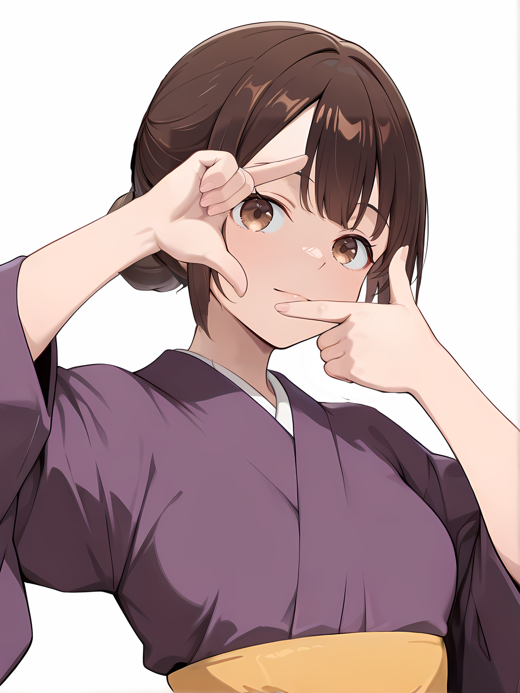
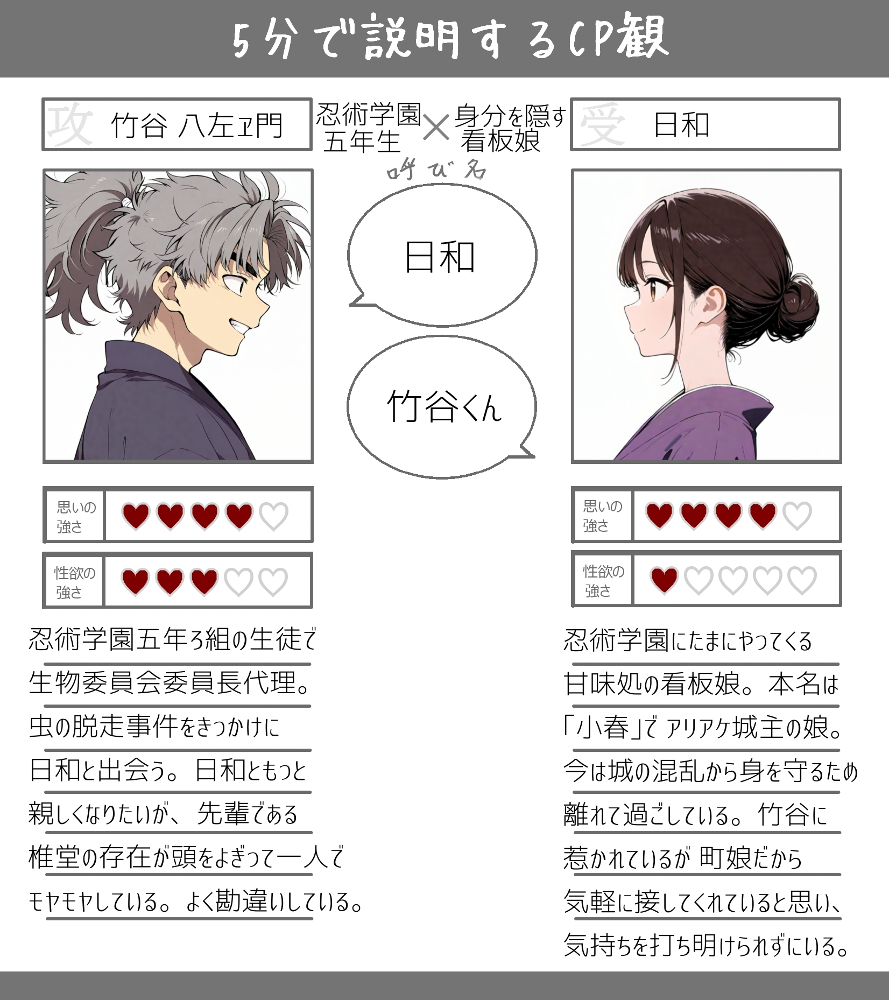

rkrn
日和(ひより)/小春(こはる)
「今日も甘味処に来てくれて ありがとうね」「竹谷くんには 私がどう見えてる？」
《基本設定》
性別：女
年齢：14歳
身長：150cm
髪型：下の方でお団子
髪色：茶色
瞳の色：茶色
ICV：三村ゆうなさん
お相手：竹谷八左ヱ門(CP表記は 竹ひよ)
Ｌ竹谷くん⇔日和
一人称：私
二人称：あなた
家族構成：＊＊＊
好き・得意：自然観察
苦手・不得意：他人の料理
イメソン：未定
【概要】
忍術学園から近い村にある甘味所の看板娘。いつも優しい笑みを浮かべ、丁寧な言葉遣いや綺麗な所作で評判の存在。学園長のお気に入りの甘味を忍術学園へ届けにいくこともあり、生徒や教師陣とも顔なじみである。穏やかな性格の裏にはどこか人と距離を取っているような雰囲気が漂い、その真意を知る者は少ない。 本名は「小春(こはる)」。アリアケ城主の一人娘として生まれ、幼少期に母を亡くしたあと 父に大切に育てられた。しかし 跡目争いが起こり、父の養子である義兄が毒を盛られる事件が発生し、自身も暗殺未遂に逢う。この事件を機に 城の内外の混乱から身を守るために、義兄の提案で 信頼する護衛忍者の松風の手引きで城を離れることとなる。現在は松風や椎堂鴻之助とともに山間部で静かに暮らしつつ、父や義兄の安全を見守る日々を送っている。表向きには「故郷を離れた娘」として扱われているが、アリアケ城との繋がりは完全には絶たれていない。静かで柔らかな物腰と冷静な判断力で周囲を癒す存在だが、心の奥底では家族や城の未来を案じ、葛藤を抱え続けている。アリアケ城とも交流のあった学園長は日和の正体を知っている数少ない人物の一人である。【竹谷との関係】
日和が甘味の配達のために忍術学園を訪れた際、生物委員が管理している虫が脱走するという騒動に遭遇。偶然、日和が脱走した虫を保護しているところを竹谷が見つけたことが交流の始まり。女子には珍しく虫に対して耐性がある日和に、竹谷が興味津々で話を聞き、それ以来 顔を合わせる度に話すようになる。 竹谷の明るく頼りがいのある性格に触れる中で、日和は淡い恋心を抱くようになるが、日和自身は「町娘の日和」であるからこそ 竹谷が気軽に接してくれると考えており、自分がアリアケ城の城主の娘「小春」であることを打ち明けることに躊躇いを感じている。自分の出自がもたらす家督争いや責務に竹谷を巻き込みたくないという思いが日和を葛藤させている。それでも竹谷との交流は日和にとって心の支えとなっており、日和自身も無意識のうちに竹谷とのひと時を大切にしている。イラスト：

